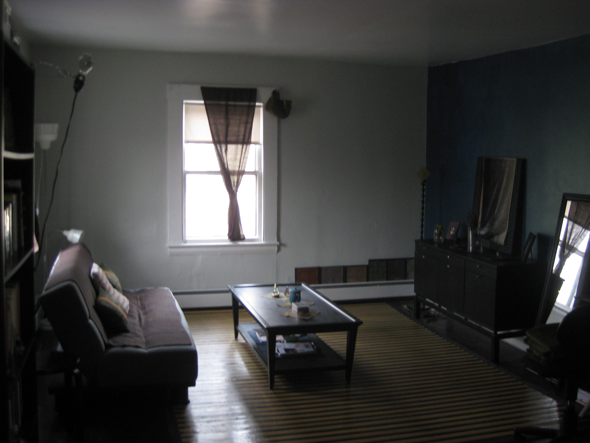
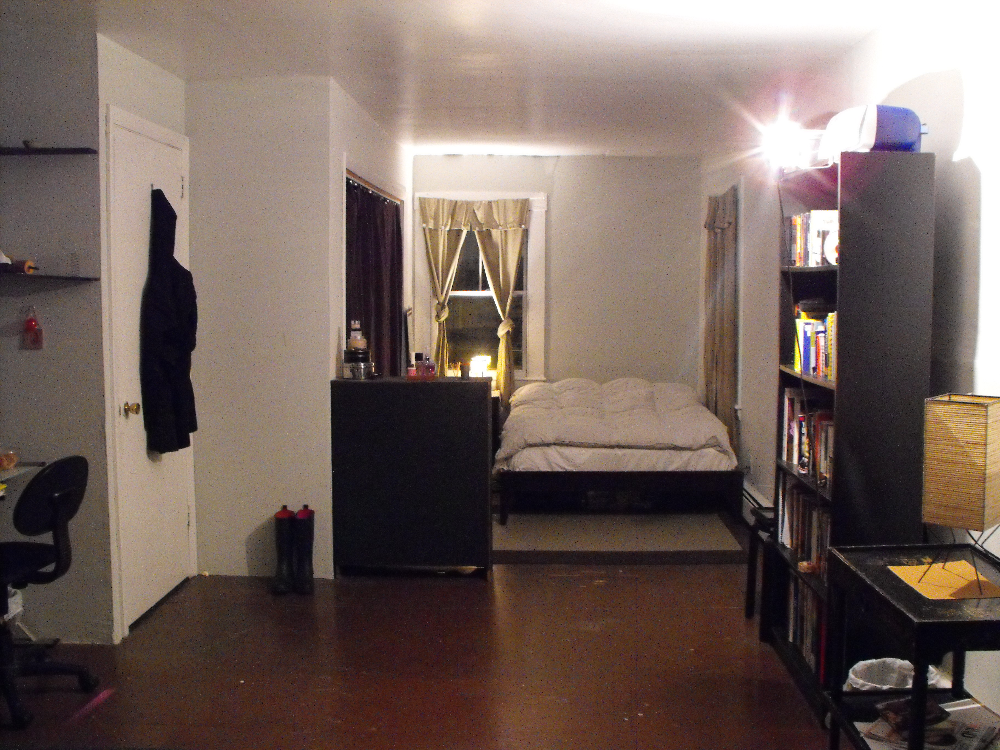

The Pearl Palace in Cambridgeport, MA
::: Last updated August 6th, 2018 :::
The Pearl Palace is a 5-bedroom house in Cambridgeport looking for a responsible, fun and courteous roommate for a move-in date of September 1st, 2018. The available room is a master bedroom, approx. 14' x 22' with 4 windows and enough closet space to sublet as a separate room. Rent for this behemoth of a room is $672/month. Utilities (electric, internet, gas) are around $120 in the winter months and $40 in the summer months.
 More photos of the room and the house can be found here.
LOCATION: Cambridgeport, Cambridge. 10 min walk to MIT, 20 minute walk to Harvard. We're also just a few blocks from Trader Joe's and Whole Foods. Central Square is a 10 minute walk away. Also, the #47 bus to Longwood Medical passes our front door.
ABOUT THE HOUSE: The house itself is pretty awesome. We have 2 1/2 floors of a three-story house from the 1850`s. Our kitchen has everything (some of us really like to cook), and the house also has a washer/dryer. There are three bedrooms on the second floor, and two on the third floor. The entire ground floor is open, with a kitchen in the middle and two living rooms on either side. Please note there is only ONE bathroom in the house. We all have different schedules, so it works out. NO PETS, sorry. The house has a funky, kitschy vibe.
ABOUT THE HOUSEMATES: Software developer working in blockchain and neurotech (female, from NYC), Berklee grad student studying music therapy (male, from India), Tufts grad student studying ethnomusicology (female, from Iowa), professional driver for a medical diagnostic company (male, from Senegal). All in their early 30's and up.
ABOUT YOU: Willing to devote 2 hours a month to cleaning common areas. Late 20's and up. Mature grad student, post-doc, or professional preferred. Easy going, clean, and respectful. Comfortable living with people from different backgrounds. Looking for a HOME (i.e., more than just a place to sleep!) :-).
Preference given to those looking to rent for at least one year. If interested, please tell us *all* about yourself via email.